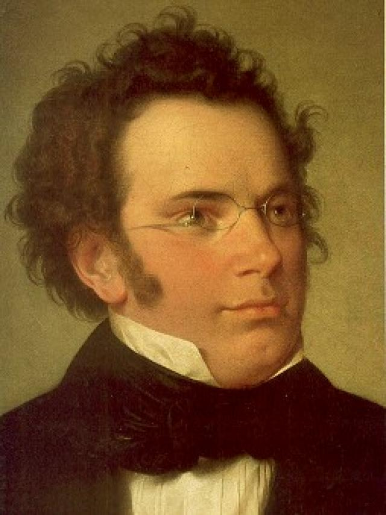
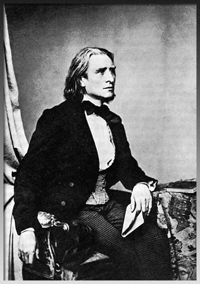
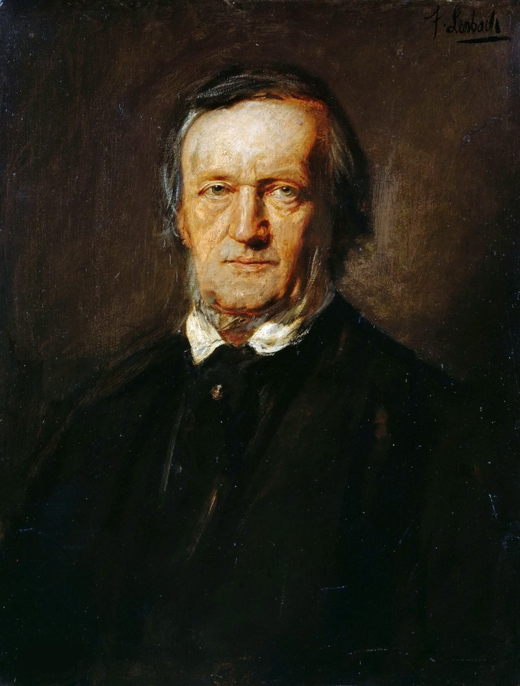
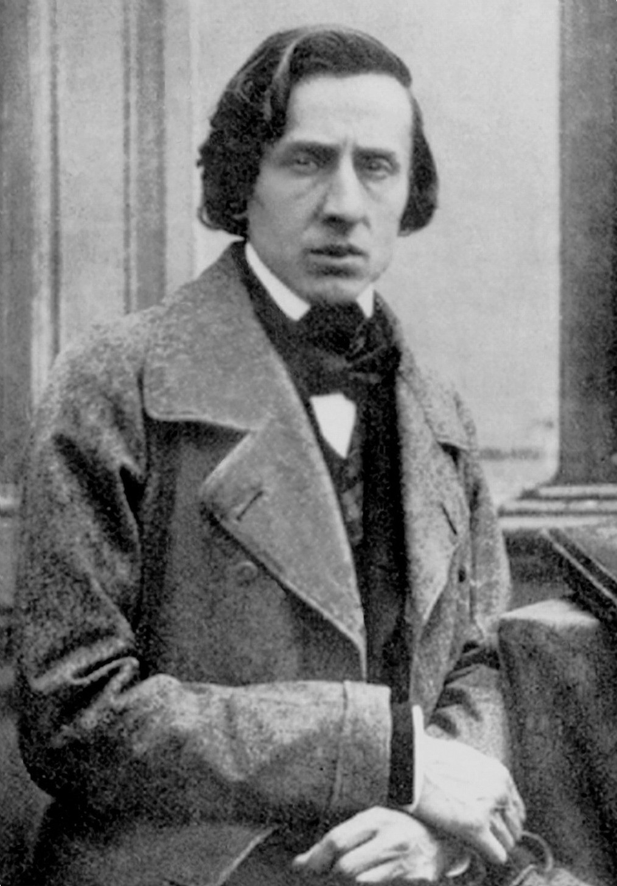
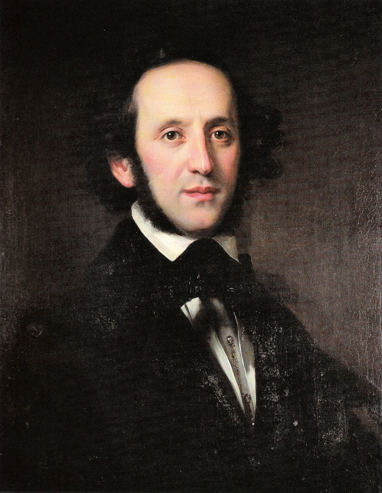

フランツ・シューベルト

シューベルトは、オーストリア・ウィーンで生まれた作曲家である。幼い頃から音楽の才能を発揮し、教会の聖歌隊や音楽学校で学びながら作曲を始めた。教師として働いた時期もあったが、作曲活動に専念し、多くの歌曲や交響曲、室内楽曲、ピアノ曲を残した。特に歌曲の分野で大きな功績を残し、「歌曲王」とも呼ばれている。しかし、生前は十分な評価や経済的成功を得ることができず、友人たちの支えを受けながら創作を続けた。31歳という若さで亡くなったが、死後に作品の価値が広く認められ、『魔王』『野ばら』『未完成交響曲』など数多くの名作は、現在でも世界中で親しまれている。
フランツ・リスト

父親の手引きにより幼少期から音楽に才能を現し、10歳になる前には公開演奏会を行っていたリストは幼少期に神童と呼ばれていた。1831年にニコロ・パガニーニの演奏を聴いて感銘を受け、超絶技巧を目指すようになる。ピアニストとして当時アイドル的存在であったリストは演奏会時に女性ファンの失神が続出したとの逸話も残っている。30代半ばでコンサート活動から引退し、ドイツのワイマールで宮廷楽長に就任。オーケストラの新しい形式である「交響詩」を創始し、指揮者・教育者としてワーグナーなどの若手音楽家を支援した。子供たちの死やカロリーネとの結婚調停の失敗といった悲劇により世俗的な名声や富への関心を完全に失ったリストは、カトリックへの信仰を深め、ローマで下級聖職位（アベ）を受ける。晩年の作品は宗教的で、調性を超越した実験的な和声法を取り入れ、20世紀の現代音楽の先駆けとなった。代表曲は『愛の夢 第３番』『ラ・カンパネラ』『超絶技巧練習曲 第4番「マゼッパ」』などが挙げられる。
リヒャルト・ワーグナー

ワーグナーはドイツの作曲家・指揮者・理論家・文筆家であり、ロマン派オペラの頂点を築いた人物として知られています。多方面で活躍したことから「楽劇王」とも呼ばれました。彼は自作オペラの台本を自ら執筆し、音楽と演劇を融合させた新しい形式である楽劇を確立しました。この革新的な手法により、従来のオペラに見られるアリアや合唱の区切りを取り払い、作品全体を一つの音楽として統合する無限旋律という概念を導入しました。ワーグナーの作品は19世紀ヨーロッパ文化に大きな影響を与え、音楽理論やオペラ制作の考え方を大きく変革しました。彼の楽劇は現在でも世界各地で上演され、多くの音楽家や観客に強い影響を与え続けています。
フレンデリィック・フランソワ・ショパン

1810年3月1日にポーランドのワルシャワで生まれたロマン派の作曲家で作曲以外にもピアノの演奏もしておりピアノの詩人と呼ばれている。ショパンは音楽に恵まれた家庭で育ち、父親はフルートとヴァイオリンが弾け、母親はピアノが弾ける。ショパンの有名な曲は「別れの曲」、「夜想曲」、「ワルツ」などがあります。経歴としては7歳ごろピアノを習い始め、16歳ごろワルシャワ音楽院に入学し19歳ごろワルシャワ音楽院を主席で卒業、21歳ごろにフランスのパリへ移住し、1849年に39歳でこの世を去りました。
フェリックス・メンデルスゾーン

ドイツで生まれ、2歳で母からピアノを、7歳で一流音楽家や教師からピアノやヴァイオリンを習う。9歳で神童としてピアニストにデビュー。10歳から4年で《結婚行進曲》や《弦楽八重奏曲》など100作を超える作品を生み出した。20歳、バッハ作曲《マタイ受難曲》を100年ぶりに上演し、成功させたことで既に過去の作曲家となりつつあったバッハの名声を世に広めました。20代で活躍の場をさらに広め、ドイツ各地の王侯貴族たちから熱烈に要請されてはその地の音楽監督を務めるなど、多忙な日々を送っていた。幼少期からとどまることを知らずに活躍していったメンデルスゾーンは、姉の急逝を受け、既に溜まっていた心身の疲労により、38歳で永遠の眠りについた。
ロベルト・アレクサンダー・シューマン
1810年6月8日にドイツのツヴィッカウという町で産まれる。父親が出版関係で母親が音楽愛好家であり、両親の影響から文学と音楽の両方に興味を示していた。10歳の頃に作曲を初めてするが、文学の方に関心が高かったため詩や戯曲の制作等もしていた。父親の勧めからライプツィヒ大学で法律を勉強するようになるが、勉強に身が入らなかった。この頃にパリで有名なピアニストのフリードリヒ・ヴィークと出会う。法律を諦めたシューマンはヴィークの下でピアニストの道を歩むことになるが、指の怪我により断念する。これをきっかけに作曲家としての道を探究するようになり、「謝肉祭」や「幻想曲」等のピアノ作品を生み出した。1840年は「歌曲の年」と呼ばれ、200曲以上の歌曲を作曲した。その後、交響曲や室内楽の作曲にも取り組む様になったが、精神的な病に苦しみ、1856年に46歳でこの世を去った。